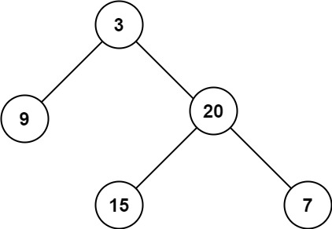

104. 二叉树的最大深度
递归：空树返回 0；否则深度 = max(左子树深度, 右子树深度) + 1，深度从叶子一层层汇总上来。
思路
- 先递归左右孩子，孩子算完自己再汇总：
Math.max(左, 右) + 1。 +1是算上自己这一层；空结点返回0，所以叶子的深度自然等于 1。- 每个结点只访问一次；递归栈深是树高
h，最坏单链时h = n。
图解
最优解
1class Solution {2 public int maxDepth(TreeNode root) {3 if (root == null) return 0;4 // 深度 = 左右子树更深的一边 + 1（算上自己）5 return Math.max(maxDepth(root.left), maxDepth(root.right)) + 1;6 }7}题目
给定一个二叉树 root ，返回其最大深度。
二叉树的 最大深度 是指从根节点到最远叶子节点的最长路径上的节点数。
示例 1：

输入：root = [3,9,20,null,null,15,7] 输出：3
示例 2：
输入：root = [1,null,2] 输出：2
提示：
- 树中节点的数量在
[0, 104]区间内。 -100 <= Node.val <= 100
题面取自力扣当前版本。
数据快照 2026-11-04。题面版权归力扣所有，本站点仅供本人学习使用，请勿对外发布。